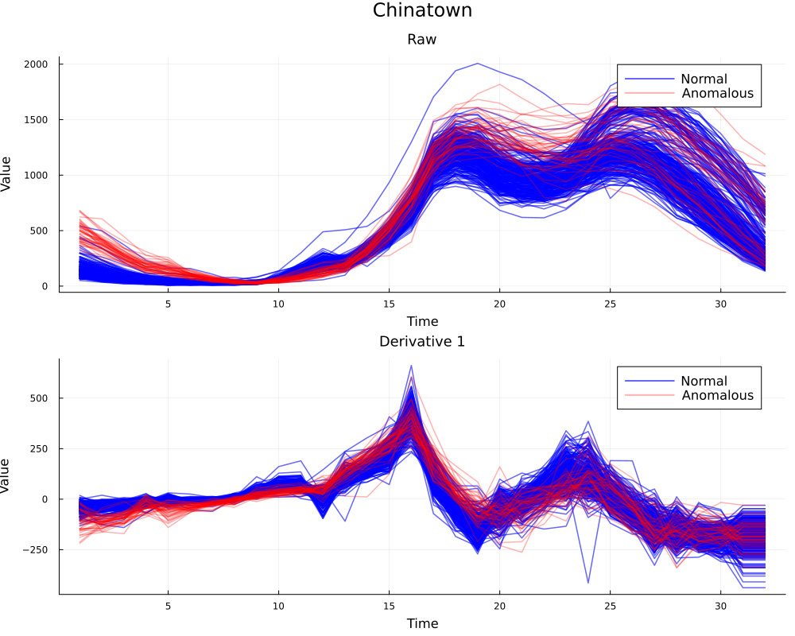

Bayesian Nonparametric Detection of Anomalies in Multivariate Functional Data
This project was my master's thesis where I developed a Bayesian nonparametric model to detect anomalies in multivariate functional data by representing each observation as arising from an infinite mixture of multi-output Gaussian processes. The approach uses wavelet-based mean modelling, an Intrinsic Coregionalization Model (ICM) for cross-output dependence, slice sampling for posterior inference, and a Carlin–Chib product-space move for automatic kernel selection. The method identifies anomalies as small or rare mixture components and is validated through simulations and three real-world datasets.

Project Details
Keywords: Bayesian Nonparametrics, Functional Data Analysis, Anomaly Detection, Gaussian Processes, Wavelets, Dirichlet Process
The model represents functional observations using an infinite mixture of Intrinsic Coregionalization Models (ICMs). Cluster-specific means are estimated in a wavelet basis with Besov-style shrinkage, while residual cross-output dependence is modelled by an ICM. The Dirichlet process (inferred via slice sampling) removes the need to pre-specify the number of clusters, and a Carlin–Chib product-space move allows automatic selection among covariance kernels.
The thesis details algorithmic approaches for efficient posterior computation, including an eigen-decomposition trick for multi-output likelihood evaluation and practical tuning strategies for the MCMC. Simulation studies quantify detection accuracy (precision/recall/F1) across anomaly types (isolated, shape, magnitude), and three real-data applications illustrate practical performance.
The implementation includes R and Python code, reproducible experiments, and notebooks. Key results show high recall for subtle anomalies on smooth datasets and robust performance on heterogeneous real-world signals.
For full details and reproducible code, see the TODO
Tech stack and methods:
- Technologies: Julia
- Algorithms: Gaussian processes (ICM), Dirichlet process mixtures, slice sampling, Carlin–Chib product-space moves, Besov priors, wavelet shrinkage
Image Gallery
 TODO
TODO
TODO